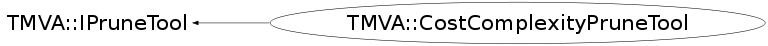

Function Members (Methods)
public:
| virtual | ~CostComplexityPruneTool() |
| virtual TMVA::PruningInfo* | CalculatePruningInfo(TMVA::DecisionTree* dt, const vector<TMVA::Event*,allocator<TMVA::Event*> >* testEvents = NULL, Bool_t isAutomatic = kFALSE) |
| TMVA::CostComplexityPruneTool | CostComplexityPruneTool(TMVA::SeparationBase* qualityIndex = NULL) |
| TMVA::CostComplexityPruneTool | CostComplexityPruneTool(const TMVA::CostComplexityPruneTool&) |
| TMVA::CostComplexityPruneTool& | operator=(const TMVA::CostComplexityPruneTool&) |
private:
| void | InitTreePruningMetaData(TMVA::DecisionTreeNode* n) |
| TMVA::MsgLogger& | Log() const |
| void | Optimize(TMVA::DecisionTree* dt, Double_t weights) |
Data Members
private:
| TMVA::MsgLogger* | fLogger | ! output stream to save logging information |
| Int_t | fOptimalK | ! the optimal index of the prune sequence |
| vector<TMVA::DecisionTreeNode*,allocator<TMVA::DecisionTreeNode*> > | fPruneSequence | ! map of weakest links (i.e., branches to prune) -> pruning index |
| vector<Double_t> | fPruneStrengthList | ! map of alpha -> pruning index |
| vector<Double_t> | fQualityIndexList | ! map of R(T) -> pruning index |
| TMVA::SeparationBase* | fQualityIndexTool | ! the quality index used to calculate R(t), R(T) = sum[t in ~T]{ R(t) } |
Class Charts
{kind=link}
{kind=link}
{kind=link}
{kind=link}

Function documentation
CostComplexityPruneTool( SeparationBase* qualityIndex )
the constructor for the cost complexity prunig
CalculatePruningInfo(TMVA::DecisionTree* dt, const vector<TMVA::Event*,allocator<TMVA::Event*> >* testEvents = NULL, Bool_t isAutomatic = kFALSE)
void InitTreePruningMetaData(TMVA::DecisionTreeNode* n)
initialise "meta data" for the pruning, like the "costcomplexity", the critical alpha, the minimal alpha down the tree, etc... for each node!!
void Optimize(TMVA::DecisionTree* dt, Double_t weights)
after the critical alpha values (at which the corresponding nodes would be pruned away) had been established in the "InitMetaData" we need now: automatic pruning: find the value of "alpha" for which the test sample gives minimal error, on the tree with all nodes pruned that have alpha_critital < alpha, fixed parameter pruning
CostComplexityPruneTool( SeparationBase* qualityIndex = NULL )